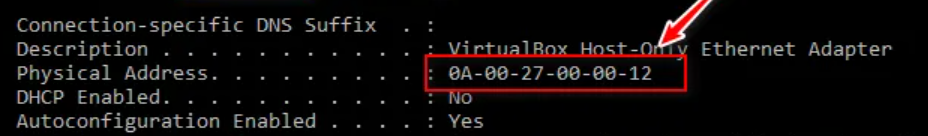
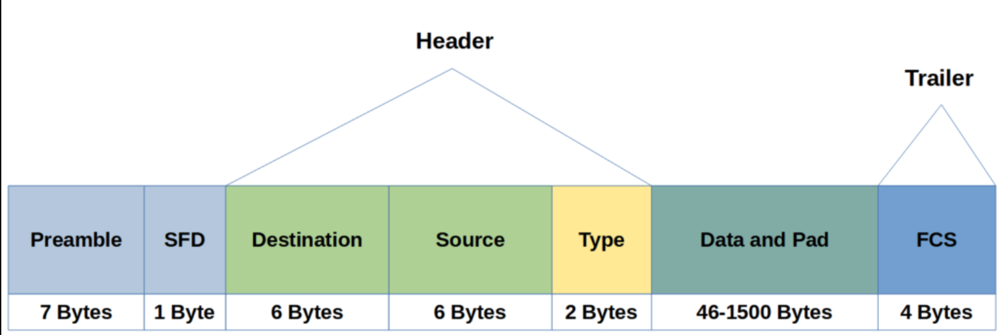
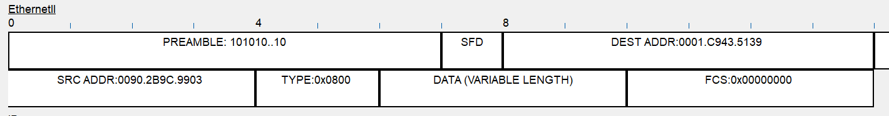

02 — Ethernet cablato: livello Data-Link (L2)
MAC address, frame Ethernet, MTU e frammentazione
Sommario
1. Il MAC Address (Indirizzamento Fisico)
Il MAC (Media Access Control) è l’indirizzo fisico “stampato” sulla scheda di rete (NIC).
- Funzione: Permette la consegna dei dati all’interno della stessa rete locale (LAN).
- Protocollo ARP: Serve a mappare l’IP (Logico) al MAC (Fisico).
- Regola: Se devo uscire dalla LAN (andare su Internet), uso l’IP e passo per il Router. Se resto nella LAN, uso il MAC e passo per lo Switch.
- Struttura: 48 bit (6 Byte), rappresentati in esadecimale (es.
00:1A:2B:3C:4D:5E).
Anatomia del MAC Address
L’indirizzo è diviso in due parti uguali di 24 bit (3 Byte) ciascuna:
| Parte | Nome | Descrizione |
|---|---|---|
| Primi 3 Byte | OUI (Organizationally Unique Identifier) | Codice assegnato dall’IEEE al produttore (es. Apple, Dell, Cisco). |
| Ultimi 3 Byte | NIC Specific (Network Interface Controller) | Numero seriale univoco assegnato dal produttore alla singola scheda. |
🧮 Facciamo due conti**:** Con 24 bit dedicati alla scheda specifica, ogni produttore ha a disposizione:
$2^{24}=16.777.216$ indirizzi univoci per ogni OUI posseduto.
⚠️ MAC Randomization & Privacy
Su dispositivi moderni (iOS, Android, Windows 10/11), il MAC reale viene nascosto quando si fa scansione Wi-Fi.
- Come funziona: Il sistema genera un MAC casuale (Randomized) per ogni rete Wi-Fi a cui si connette.
- Perché: Per evitare il tracciamento degli utenti (es. nei centri commerciali).
- Impatto su OSINT (Open Source INTelligence): I tool che cercano l’OUI per identificare il dispositivo falliscono o danno “Unknown”, perché il MAC casuale non appartiene a nessun vendor reale.

MAC address su Windows con comando ipconfig /all reale o spoofato
2. Ethernet Frame (IEEE 802.3)
Il “Frame” è l’unità dati (PDU = Protocol Data Unit) del livello 2. È il contenitore che viaggia sui cavi. Dimensione: Minimo 64 byte - Massimo 1518 byte (Standard).

Preamble e SFD possono anche essere associati all’header del Layer 1
A. Layer 1 (Preludio fisico)
Questi bit non contano nella grandezza del frame logico, servono a “svegliare” la scheda di rete.
- Preamble (7 Byte): Sequenza alternata
10101010.... Serve a sincronizzare i clock di ricezione (bit synchronization). - SFD (Start Frame Delimiter - 1 Byte): Sequenza
10101011. L’ultimo bit a1dice: “Attenzione, da adesso inizia il frame vero e proprio”.
B. Header (Intestazione L2)
- Destination MAC (6 Byte): Indirizzo di chi deve ricevere.
- Source MAC (6 Byte): Indirizzo di chi invia.
- Type / Length (2 Byte):
- Se valore < 1500: Indica la Lunghezza del frame.
- Se valore > 1536 (Hex): Indica il Tipo di Protocollo incapsulato (EtherType).
- Codici comuni:
0x0800→ IPv40x0806→ ARP0x86DD→ IPv6
C. Payload (Il carico utile)
- Data & Padding (46 - 1500 Byte):
- Qui dentro c’è il Pacchetto IP (o ARP).
- Padding (Riempimento): Esiste una regola storica (CSMA/CD) per cui un frame non può essere più piccolo di 64 byte.
- Calcolo: 64 byte (Min) - 18 byte (Header+Trailer) = 46 byte.
- Se i dati sono meno di 46 byte, si aggiungono zeri (Padding) per arrivare alla dimensione minima.
D. Trailer (Coda)
- FCS (Frame Check Sequence - 4 Byte):
- Contiene un valore calcolato con algoritmo CRC (Cyclic Redundancy Check).
- Il ricevente ricalcola il CRC: se corrisponde a questo campo, il frame è integro. Se diverso, il frame è corrotto e viene scartato.

In CISCO packet tracer posso vedere l’anatomia dell’ethernet frame sopra citato ed il contenuto
Per vedere come funziona la comunicazione nel layer 2 (usando MAC tables) con cisco packet tracer:
Video: comunicazione Layer 2 e MAC address table
3. MTU & Frammentazione
Definizione: MTU (Maximum Transmission Unit). È la dimensione massima del Payload che un frame Ethernet può trasportare. Standard: 1500 Byte.
Cosa succede se i dati sono > 1500 byte?
- Frammentazione IP: Il livello Network (L3) divide il pacchetto grosso in più pacchetti piccoli che entrano nell’MTU.
- Jumbo Frames: Alcune reti moderne supportano frame giganti (fino a 9000 byte).
- Pro: Meno overhead (meno header da elaborare per la CPU).
- Contro: Tutti i dispositivi sulla tratta (Switch, Router, NIC) devono essere configurati per supportarli, altrimenti i pacchetti vengono persi.